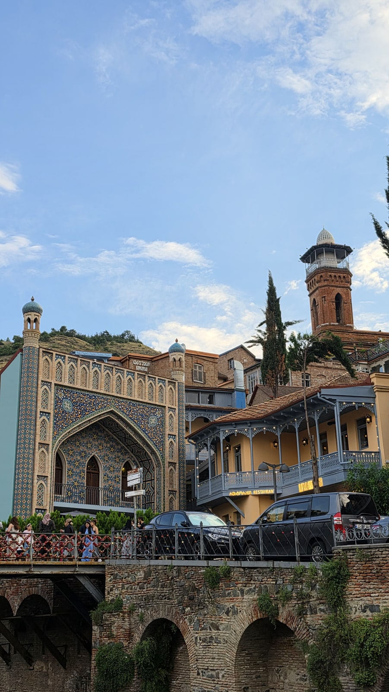
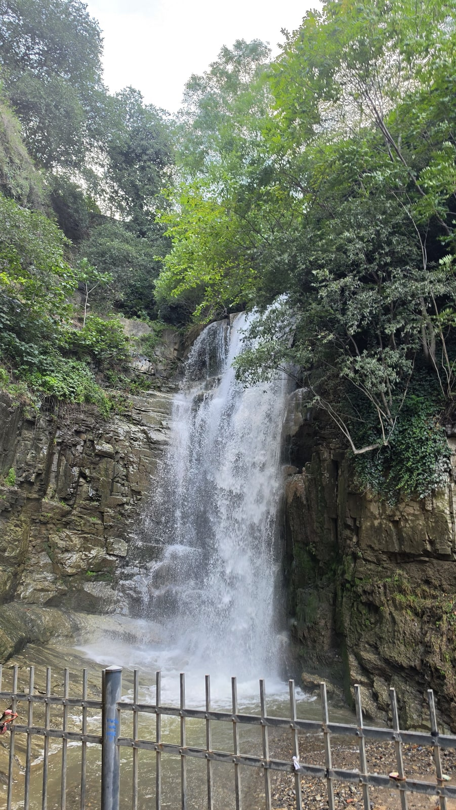
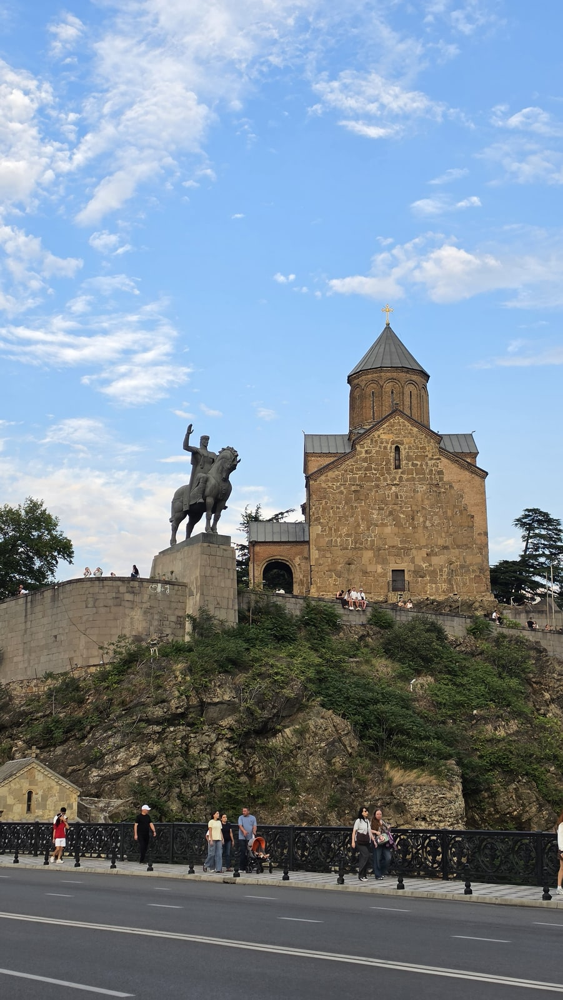
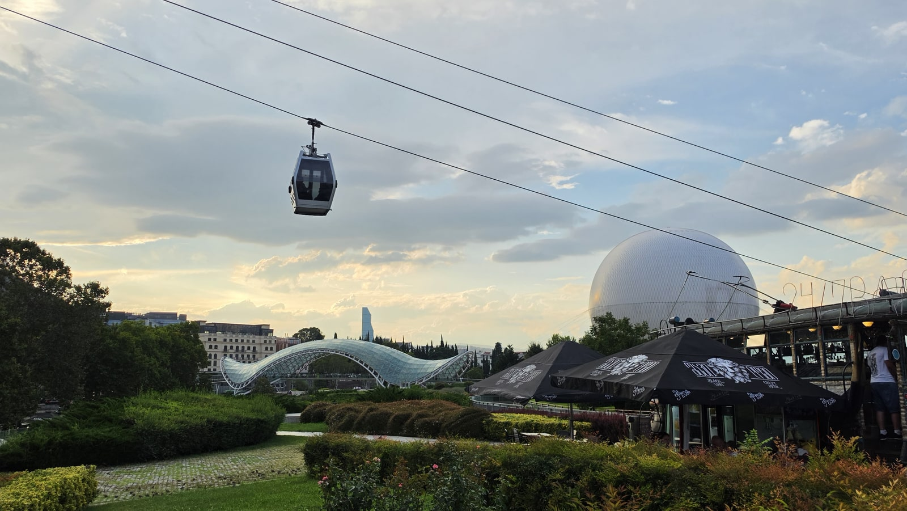
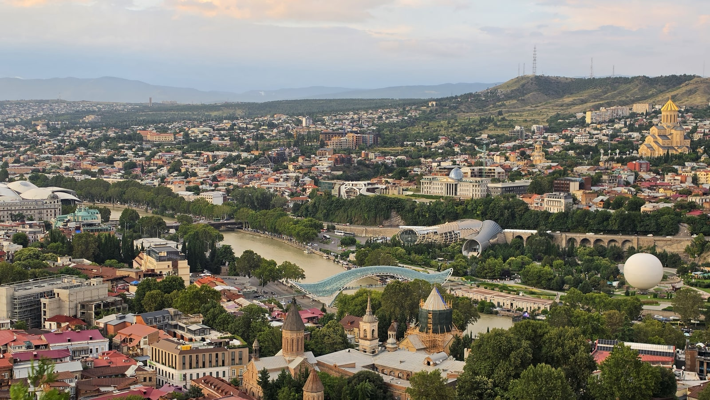
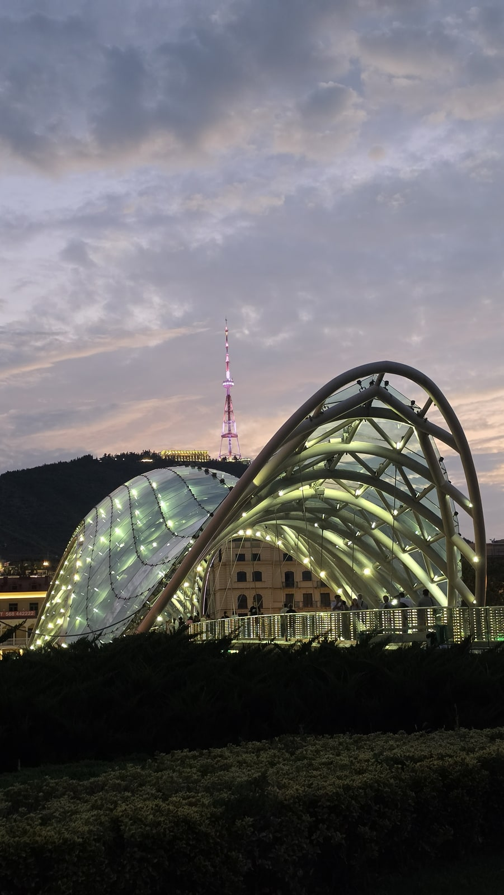
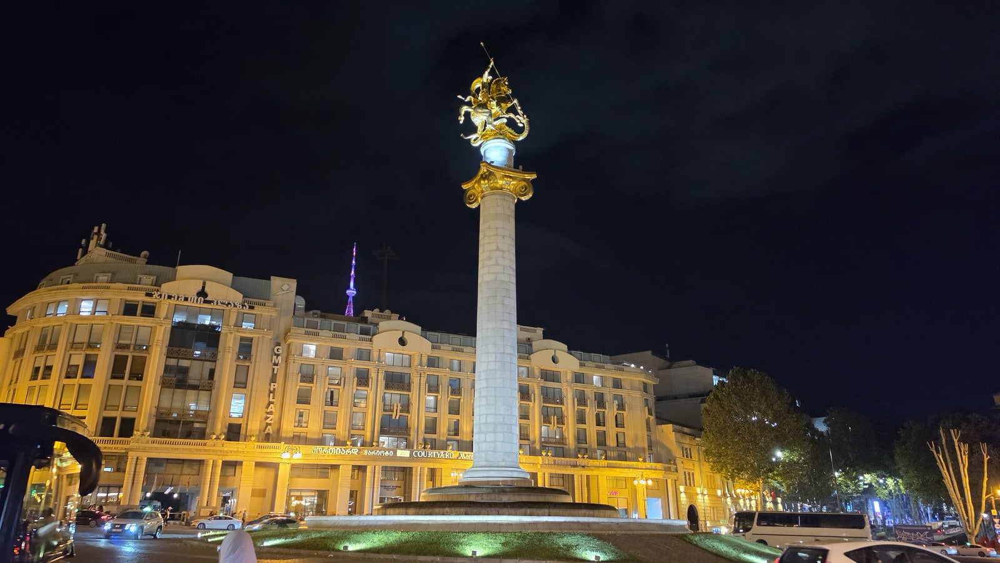
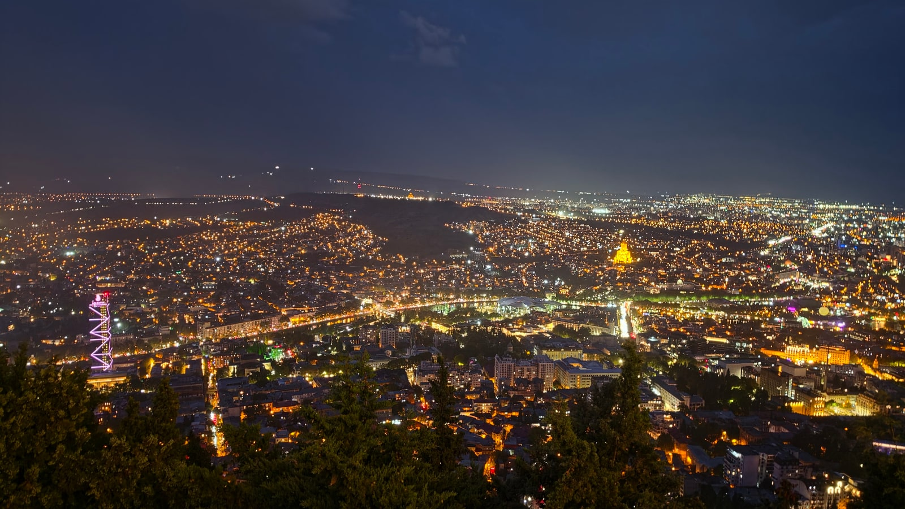
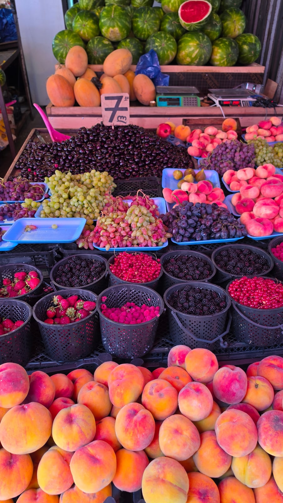
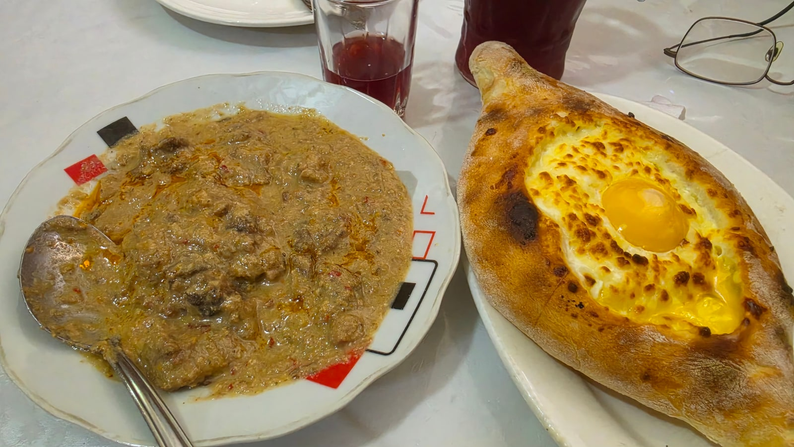

<meta charset="utf-8">
<title>트빌리시 하루 코스 — 연대기부터 나리칼라 노을까지 — 나의 투자 그리고 행복한 여행</title>
<meta name="description" content="트빌리시 하루 코스 실제 동선: 조지아 연대기, 아바노투바니, 레그바타헤비 폭포, 케이블카, 나리칼라, 어머니상 노을(20:04), 평화의 다리, 자유광장.">
<meta name="viewport" content="width=device-width, initial-scale=1">
<link rel="canonical" href="https://danielmoon82.github.io/moon/posts/tbilisi-oneday-course-2026-09-14.html">
<link rel="preconnect" href="https://fonts.googleapis.com">
<link rel="preconnect" href="https://fonts.gstatic.com" crossorigin>
<link rel="stylesheet" href="https://fonts.googleapis.com/css2?family=Hahmlet:wght@400;600;800&family=IBM+Plex+Mono:wght@400;500&family=IBM+Plex+Sans+KR:wght@300;400;500;600&display=swap">

<style>
  :root{
    --paper:#F2EEE6;--surface:#FAF8F3;--surface-2:#E7E1D5;
    --ink:#191510;--ink-2:#4A4235;--ink-3:#7D7364;
    --line:#D6CEBF;--line-soft:#E4DDD0;--accent:#B06A15;--accent-bright:#C2761A;
    --up:#E5484D;--down:#3B82F6;
    --f-display:"Hahmlet",'Nanum Myeongjo',"Apple SD Gothic Neo",serif;
    --f-body:"IBM Plex Sans KR","Apple SD Gothic Neo","Malgun Gothic",sans-serif;
    --f-mono:"IBM Plex Mono","SFMono-Regular",Consolas,monospace;
    --pad:clamp(20px,5vw,64px);
  }
  @media (prefers-color-scheme:dark){
    :root:not([data-theme="light"]){
      --paper:#0B1120;--surface:#121A2C;--surface-2:#1A2439;
      --ink:#E9EEF7;--ink-2:#A9B5C9;--ink-3:#72809A;
      --line:#26314A;--line-soft:#1D2739;--accent:#E8A33D;--accent-bright:#F0B45C;
    }
  }
  *{box-sizing:border-box;}
  body{margin:0;background:var(--paper);color:var(--ink);font-family:var(--f-body);
    font-weight:300;font-size:1rem;line-height:1.75;-webkit-font-smoothing:antialiased;}
  a{color:inherit;}
  img{max-width:100%;height:auto;}
  .wrap{max-width:760px;margin:0 auto;padding-inline:var(--pad);}
  .nav{position:sticky;top:0;z-index:20;background:color-mix(in srgb,var(--paper) 88%,transparent);
    backdrop-filter:saturate(180%) blur(12px);border-bottom:1px solid var(--line);}
  .nav-in{display:flex;align-items:center;justify-content:space-between;height:58px;}
  .brand{font-family:var(--f-display);font-weight:600;font-size:1rem;letter-spacing:-.02em;text-decoration:none;}
  .back{font-family:var(--f-mono);font-size:.72rem;color:var(--ink-3);text-decoration:none;}
  .article{padding-block:clamp(40px,7vw,72px) clamp(56px,9vw,96px);}
  .eyebrow{font-family:var(--f-mono);font-size:.68rem;letter-spacing:.16em;text-transform:uppercase;
    color:var(--accent);margin:0 0 14px;}
  h1{font-family:var(--f-display);font-weight:800;font-size:clamp(1.6rem,4.4vw,2.3rem);
    line-height:1.3;letter-spacing:-.03em;margin:0 0 16px;}
  .byline{font-family:var(--f-mono);font-size:.72rem;color:var(--ink-3);
    padding-bottom:24px;border-bottom:1px solid var(--line);margin-bottom:32px;}
  h2{font-family:var(--f-display);font-weight:600;font-size:1.25rem;letter-spacing:-.02em;margin:42px 0 14px;}
  h3{font-family:var(--f-display);font-weight:600;font-size:1.05rem;letter-spacing:-.02em;
    margin:30px 0 10px;padding-top:14px;border-top:1px solid var(--line-soft);}
  h3 .code{font-family:var(--f-mono);font-size:.7rem;font-weight:400;color:var(--ink-3);margin-left:6px;}
  p{margin:0 0 18px;color:var(--ink-2);}
  ul.checks{margin:0 0 18px;padding-left:20px;color:var(--ink-2);}
  ul.checks li{margin-bottom:8px;font-size:.94rem;}
  table{width:100%;border-collapse:collapse;font-size:.88rem;margin-bottom:8px;}
  th{font-family:var(--f-mono);font-size:.66rem;letter-spacing:.06em;text-transform:uppercase;
    color:var(--ink-3);text-align:right;padding:8px 6px;border-bottom:1px solid var(--line);}
  th:first-child{text-align:left;}
  td{padding:10px 6px;border-bottom:1px solid var(--line-soft);color:var(--ink-2);}
  td.num{font-family:var(--f-mono);text-align:right;font-variant-numeric:tabular-nums;}
  td.up{color:var(--up);} td.down{color:var(--down);}
  .scroll{overflow-x:auto;}
  figure{margin:22px 0;}
  figure img{display:block;border-radius:3px;background:var(--surface-2);}
  figcaption{margin-top:8px;font-family:var(--f-mono);font-size:.68rem;color:var(--ink-3);text-align:center;}
  .note{margin-top:34px;padding:16px 18px;border-left:3px solid var(--accent);
    background:var(--surface);border-radius:0 3px 3px 0;}
  .note p{margin:0;font-size:.85rem;color:var(--ink-3);}
  .foot{border-top:1px solid var(--line);background:var(--surface);padding-block:30px 38px;}
  .foot p{margin:0;font-size:.8rem;color:var(--ink-3);}
</style>

<nav class="nav">
  <div class="wrap nav-in">
    <a class="brand" href="../index.html">나의 투자 그리고 행복한 여행</a>
    <a class="back" href="../index.html#stocks">← 시황으로</a>
  </div>
</nav>

<main class="wrap article">
  <p class="eyebrow">Market</p>
  <h1>트빌리시 하루 동선 기록 (2026.8.13) — 사진 시각 기준 타임라인</h1>
  <p class="byline">여행 · 2026-09-14 기준</p>

  <p>한 줄 요약: 조지아 연대기(15:40) → 구시가지(17:27) → 아바노투바니(18:48) → 레그바타헤비 폭포(18:56) → 메테히 교회(19:04) → 케이블카(19:11) → 나리칼라(19:26) → 어머니상 노을(20:04) → 평화의 다리(20:27) → 자유광장(21:13).</p>
  <p>시각은 모두 사진 촬영 시각입니다. 다른 날 추가로 간 곳(시계탑, 므타츠민다, 시장)은 뒤에 따로 붙였습니다.</p>
  <h2>하루 타임라인 (8월 13일)</h2>
  <ul class="checks">
    <li>15:40~16:12  조지아 연대기 — 시내 북쪽 외곽, 대중교통으로 이동</li>
    <li>17:27~17:34  구시가지 도착</li>
    <li>18:48~18:54  아바노투바니 온천 거리, 나무 발코니 골목</li>
    <li>18:56  레그바타헤비 폭포</li>
    <li>19:04~19:09  메테히 교회, 바흐탕 고르가살리 기마상</li>
    <li>19:11  리케 공원 케이블카</li>
    <li>19:26~19:41  나리칼라 요새 쪽 전망</li>
    <li>20:04~20:11  조지아의 어머니상 앞 노을 (이날 일몰 20:04)</li>
    <li>20:27  평화의 다리 야경</li>
    <li>21:13  자유광장</li>
  </ul>
  <div class="note"><p>핵심은 19시쯤 케이블카를 타는 것입니다. 여름 기준으로 그러면 요새 능선을 걷다가 딱 일몰 무렵 어머니상 앞에 닿습니다.</p></div>
  <h2>15:40 조지아 연대기 — 먼저 외곽부터</h2>
  <figure><figcaption>조지아 연대기. 거대한 기둥에 조지아 역사가 새겨져 있습니다 (2026.8.13 15:45 촬영)</figcaption></figure>
  <p>조지아 연대기는 트빌리시 북쪽 외곽, '트빌리시 해'라고 부르는 저수지 근처 언덕에 있습니다. 조각가 주라브 체레텔리가 1985년에 만들기 시작한 작품으로, 높이 30~35m짜리 기둥 16개에 조지아의 역사와 성경 이야기가 새겨져 있습니다.</p>
  <p>구시가지와 떨어져 있어서 하루 코스의 맨 앞에 두는 게 좋습니다. 저는 대중교통으로 갔고(15시 14분, 15시 24분에 차 안에서 찍은 사진이 있습니다), 30분 남짓 둘러봤습니다.</p>
  <p>기둥 하나하나가 건물만 한 크기라 가까이 서면 압도됩니다. 기둥 사이를 걸으며 조각을 볼 수 있습니다.</p>
  <h2>18:48 아바노투바니 — 유황 온천 거리</h2>
  <figure><figcaption>아바노투바니 유황 온천의 벽돌 돔 지붕 (2026.8.13 18:50 촬영)</figcaption></figure>
  <p>구시가지 아래쪽, 벽돌로 된 둥근 지붕이 줄지어 있는 곳이 아바노투바니 온천 거리입니다. 지붕 아래가 목욕탕이고, 근처에 가면 유황 냄새가 납니다.</p>
  <p>저는 온천에 들어가지 않고 거리만 지나갔습니다. 이용하려면 개별 룸 예약이 일반적이라 미리 알아보는 게 좋습니다.</p>
  <figure><figcaption>구시가지의 나무 발코니 집들 (2026.8.13 18:54 촬영)</figcaption></figure>
  <p>온천 거리 주변 골목에는 조각된 나무 발코니가 달린 오래된 집들이 있습니다. 트빌리시 구시가지 특유의 모습입니다.</p>
  <h2>18:56 레그바타헤비 폭포 — 도심 속 골짜기</h2>
  <figure><figcaption>온천 거리 안쪽 골짜기의 레그바타헤비 폭포 (2026.8.13 18:56 촬영)</figcaption></figure>
  <p>온천 거리에서 골짜기 안쪽으로 몇 분만 걸어 들어가면 폭포가 나옵니다. 구시가지 바로 뒤에 이런 골짜기가 있다는 게 의외인 곳입니다.</p>
  <p>길이 짧아서 왕복 15분이면 충분합니다. 온천 거리에서 이어서 들르기 좋습니다.</p>
  <h2>19:04 메테히 교회 — 강 건너에서 보는 구시가지</h2>
  <figure><figcaption>절벽 위의 메테히 교회와 바흐탕 고르가살리 기마상 (2026.8.13 19:07 촬영)</figcaption></figure>
  <p>강 건너 절벽 위에 메테히 교회와 트빌리시를 세운 왕 바흐탕 고르가살리의 기마상이 있습니다. 여기서 보면 구시가지와 나리칼라 요새가 한눈에 들어옵니다.</p>
  <p>메테히 교회 아래로 내려가면 리케 공원이고, 케이블카 승강장이 있습니다.</p>
  <h2>19:11 리케 공원 케이블카 — 나리칼라로 한 번에</h2>
  <figure><figcaption>리케 공원에서 나리칼라로 올라가는 케이블카 (2026.8.13 19:11 촬영)</figcaption></figure>
  <p>리케 공원에서 나리칼라 요새 쪽으로 케이블카가 다닙니다. 요금은 2.5라리(약 1,400원)로 안내되며, 교통카드(메트로머니)로 냅니다. 일반 대중교통 1일권에는 포함되지 않는 것으로 안내됩니다.</p>
  <p>타는 시간은 짧지만 강과 구시가지 위를 지나가서 전망이 좋습니다. 걸어서 올라가는 길도 있지만 경사가 가파릅니다.</p>
  <h2>19:26 나리칼라 요새 — 트빌리시가 내려다보이는 곳</h2>
  <figure><figcaption>나리칼라 쪽에서 본 구시가지와 므트크바리강 (2026.8.13 19:41 촬영)</figcaption></figure>
  <p>나리칼라는 4세기에 처음 세워진 요새입니다. 지금은 성벽 일부가 남아 있고, 그 위에서 트빌리시 구시가지와 강이 한눈에 보입니다.</p>
  <p>요새 주변은 돌길이고 경사가 있습니다. 미끄럽지 않은 신발이 필요합니다.</p>
  <h2>20:04 조지아의 어머니상 — 여기서 노을을 보세요</h2>
  <figure><figcaption>노을 속의 조지아의 어머니상 (2026.8.13 20:04 촬영, 이날 일몰 시각)</figcaption></figure>
  <p>나리칼라에서 능선을 따라 걸으면 조지아의 어머니상(카르틀리스 데다)이 나옵니다. 1958년에 세워진 높이 20m 동상으로, 한 손에는 손님을 위한 포도주 잔을, 다른 손에는 적을 위한 칼을 들고 있습니다.</p>
  <p>이 사진을 찍은 시각이 20시 4분, 그날 트빌리시 일몰 시각과 같습니다. 구름 사이로 하늘이 주황빛으로 물드는 시간이었습니다.</p>
  <div class="note"><p>일몰 시각은 계절마다 다릅니다. 여름에는 8시 전후, 가을로 갈수록 빨라집니다. 가는 날의 일몰 시각을 먼저 확인하고 케이블카 탈 시간을 그보다 한 시간쯤 앞에 두세요.</p></div>
  <figure><figcaption>해가 진 직후 언덕에서 본 트빌리시 (2026.8.13 20:13 촬영)</figcaption></figure>
  <h2>20:27 평화의 다리 — 내려와서 야경</h2>
  <figure><figcaption>불이 들어온 평화의 다리 (2026.8.13 20:27 촬영)</figcaption></figure>
  <p>언덕을 내려오면 므트크바리강 위의 평화의 다리입니다. 2010년에 이탈리아 건축가 미켈레 데 루키가 설계한 150m 길이의 유리 보행교로, 밤에는 조명이 들어옵니다.</p>
  <p>다리 주변과 구시가지 쪽에 식당 거리가 있어서 저녁을 먹기 좋습니다.</p>
  <h2>21:13 자유광장 — 하루의 끝</h2>
  <figure><figcaption>밤의 자유광장 (2026.8.13 21:13 촬영)</figcaption></figure>
  <p>구시가지 위쪽의 자유광장에서 하루를 마쳤습니다. 지하철역(리버티 스퀘어)이 있어서 여기서 숙소로 돌아가기 편합니다.</p>
  <h2>다른 날 추가로 간 곳 — 하루가 더 있다면</h2>
  <figure><figcaption>구시가지 샤브텔리 거리의 가브리아제 시계탑 (2026.8.15 18:28 촬영)</figcaption></figure>
  <p><b>가브리아제 시계탑</b> — 구시가지 샤브텔리 거리에 있는 기울어진 시계탑입니다. 12시와 19시에 탑 위에서 작은 인형 공연이 열린다고 안내돼 있습니다.</p>
  <figure><figcaption>므타츠민다에서 내려다본 트빌리시 야경 (2026.8.18 20:31 촬영)</figcaption></figure>
  <p><b>므타츠민다</b> — 시내 서쪽의 가장 높은 언덕으로, 놀이공원과 TV 타워가 있습니다. 푸니쿨라를 타고 올라가는데 요금은 편도 10라리, 전용 카드 2라리로 안내됩니다. 일반 교통카드는 쓸 수 없는 것으로 안내됩니다. 야경은 나리칼라보다 높은 곳에서 보는 느낌입니다.</p>
  <figure><figcaption>트빌리시의 농산물 시장 (2026.8.19 15:05 촬영)</figcaption></figure>
  <figure><figcaption>배 모양 치즈빵 아자룰리 하차푸리 (2026.8.19 16:33 촬영)</figcaption></figure>
  <p><b>시장과 하차푸리</b> — 여름 과일이 쌓인 시장을 구경하고, 조지아 대표 음식인 아자룰리 하차푸리를 먹었습니다. 배 모양 빵에 치즈와 달걀, 버터를 올린 음식으로 양이 많습니다.</p>
  <div style="text-align:center;margin:30px 0"><a href="https://danielmoon82.github.io/moon/posts/tbilisi-3day-itinerary-2026-09-14.html" target="_blank" rel="nofollow sponsored noopener" style="display:inline-block;padding:15px 28px;background:#E34948;color:#fff;font-weight:700;font-size:18px;text-decoration:none;border-radius:8px"><b>▶ 트빌리시 3일 일정 전체 보기</b></a></div>
  <h2>이 코스를 따라갈 때 알아둘 것</h2>
  <ul class="checks">
    <li>연대기는 외곽이라 먼저, 구시가지는 해 질 무렵에 — 순서를 바꾸면 이동이 꼬입니다</li>
    <li>구시가지와 나리칼라 쪽은 돌길과 경사가 많습니다. 발이 편한 신발이 필수입니다</li>
    <li>케이블카 요금(2.5라리)은 교통카드로 냅니다. 카드를 미리 충전해 두세요</li>
    <li>8월 트빌리시는 낮에 덥습니다. 한낮 야외 일정은 줄이고 오후 늦게 움직이는 편이 낫습니다</li>
    <li>노을 뒤에는 금방 어두워집니다. 내려오는 길은 사람이 많은 쪽을 택하세요</li>
  </ul>
  <h2>자주 묻는 질문</h2>
  <p><b>트빌리시 하루면 충분한가요?</b></p>
  <p>구시가지 핵심(온천 거리, 나리칼라, 어머니상, 평화의 다리)은 이 동선대로 하루에 볼 수 있습니다. 시계탑, 므타츠민다, 시장까지 넣으려면 하루가 더 필요합니다.</p>
  <p><b>케이블카는 어디서 타나요?</b></p>
  <p>강 건너 리케 공원에서 나리칼라 요새 쪽으로 올라갑니다. 2.5라리이고 교통카드로 결제합니다.</p>
  <p><b>나리칼라 노을은 몇 시에 보나요?</b></p>
  <p>8월 중순 기준 일몰이 20시 전후입니다. 제가 어머니상 앞에서 찍은 사진이 20시 4분이었습니다. 계절에 따라 달라지니 일몰 시각을 먼저 확인하세요.</p>
  <p><b>조지아 연대기는 어떻게 가나요?</b></p>
  <p>시내 북쪽 외곽이라 대중교통이나 차로 가야 합니다. 저는 대중교통을 이용했는데 탄 노선 번호는 기록해두지 못했습니다. 지도 앱에서 경로를 확인하는 게 정확합니다.</p>
  <h2>정리하면</h2>
  <p>트빌리시 하루 코스의 뼈대는 간단합니다. 외곽을 먼저 보고, 해 질 무렵 구시가지로 내려와, 케이블카로 올라가서 노을을 보고, 걸어 내려오며 야경을 봅니다.</p>
  <p>일몰 시각 하나만 확인하고 가면 나머지는 자연스럽게 맞춰집니다.</p>
  <div style="text-align:center;margin:30px 0"><a href="https://danielmoon82.github.io/moon/posts/georgia-travel-guide-2026-09-14.html" target="_blank" rel="nofollow sponsored noopener" style="display:inline-block;padding:15px 28px;background:#E34948;color:#fff;font-weight:700;font-size:18px;text-decoration:none;border-radius:8px"><b>▶ 조지아 여행 준비 총정리 보기</b></a></div>
  <p style="font-size:12px;color:#999;line-height:1.6;margin-top:36px">방문 날짜와 시각은 2026년 8월 12~20일 여행 중 찍은 사진의 촬영 시각(조지아 현지 시각)으로 확인했습니다. 요금·운영 정보는 2026년 9월 13~14일에 확인한 공개 정보이며 바뀔 수 있습니다. 원화 환산은 조지아 중앙은행 2026년 8월 14일 환율(1,000원 = 1.8403라리)로 계산한 대략치입니다. 역사 정보는 위키백과, 시계탑 공연 시간은 조지아 관광청(georgia.travel), 케이블카·푸니쿨라 요금은 여행 가이드들의 공통 안내를 참고했습니다. 일몰 시각은 천문 계산값입니다.</p>
</main>

<footer class="foot">
  <div class="wrap"><p>나의 투자 그리고 행복한 여행 · 투자 판단의 참고 자료일 뿐, 매수·매도를 권유하지 않습니다.</p></div>
</footer>
